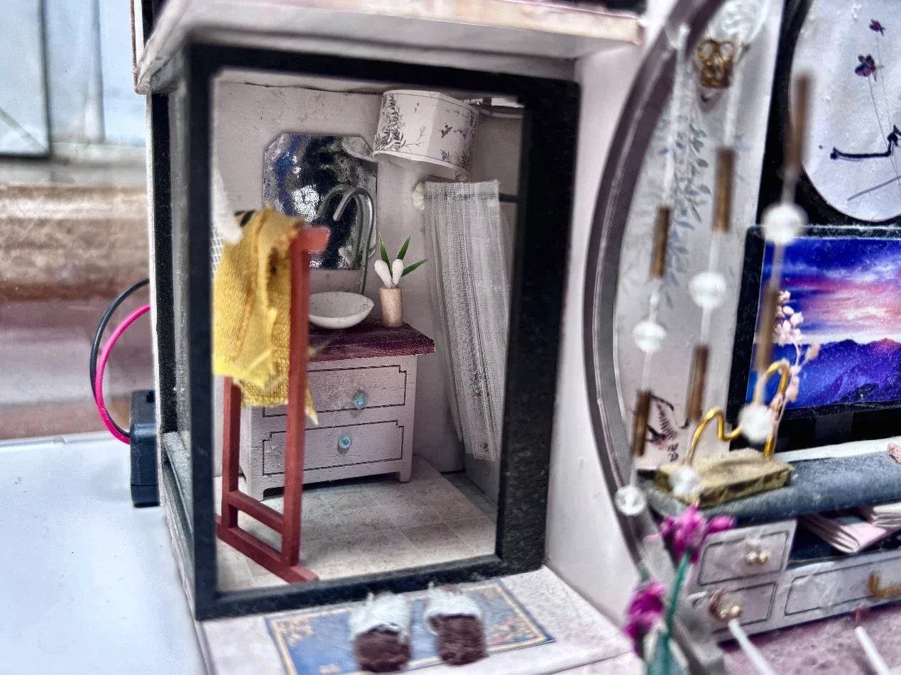
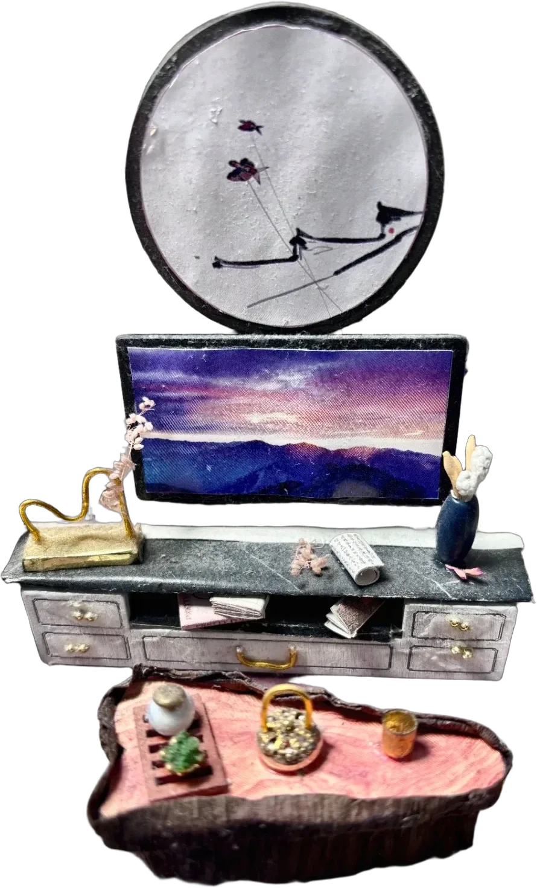
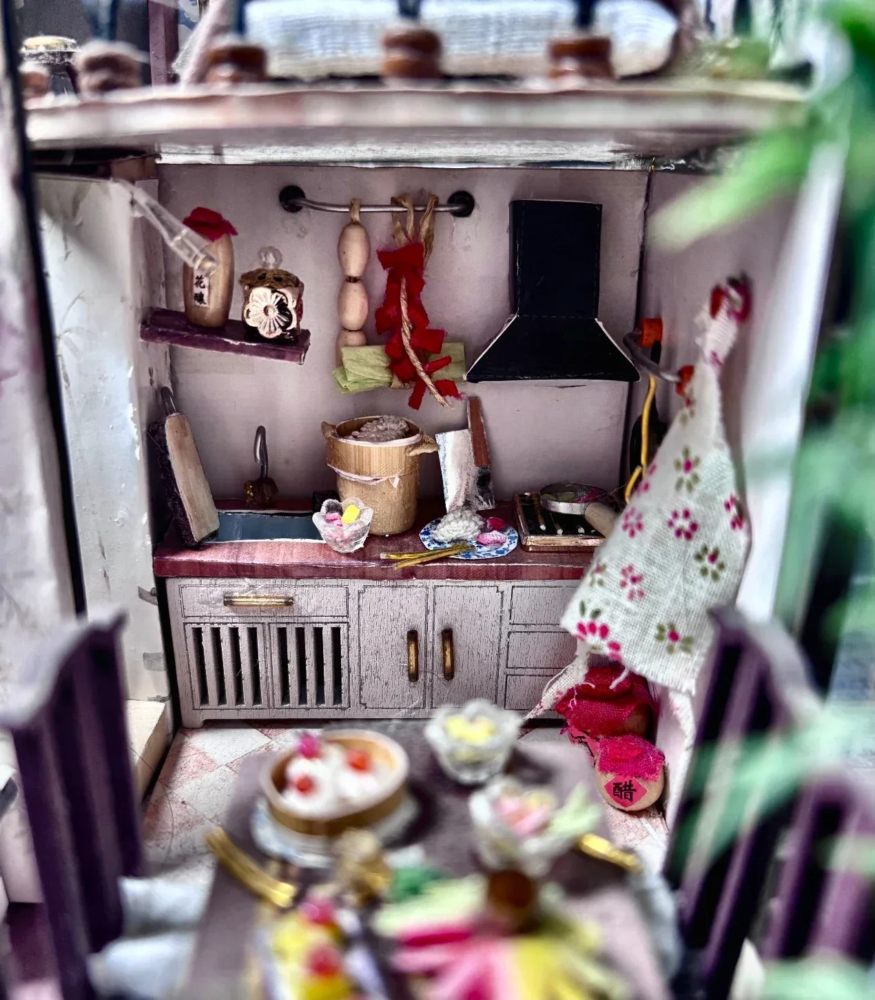
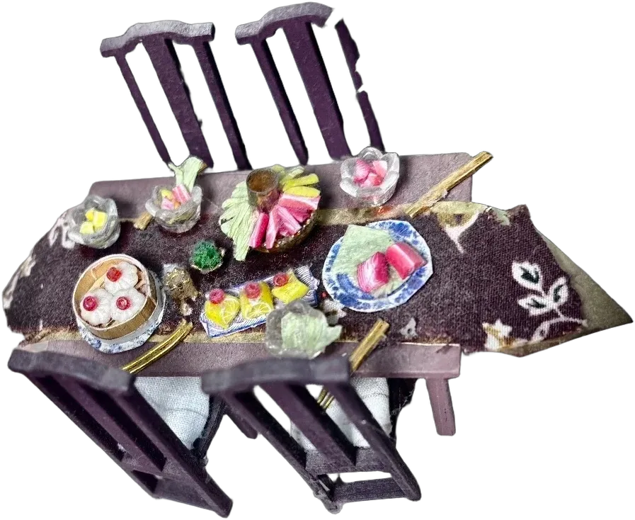
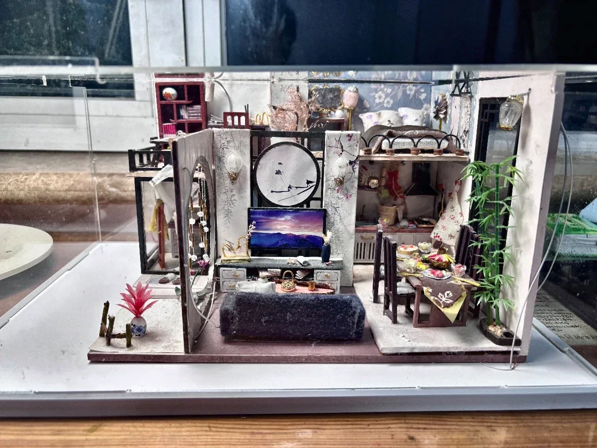
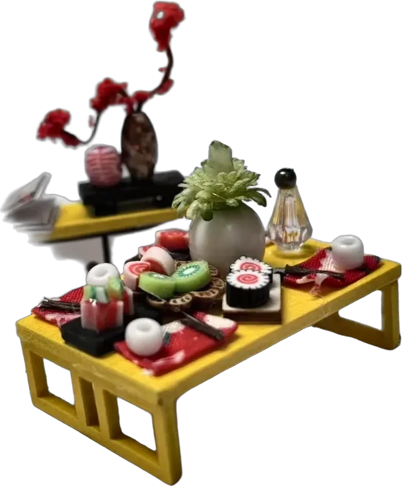

A housein miniature

Five rooms, one desk, more than two hundred parts made by hand.
A mustard seed holds a mountain
“The cleverer I am at miniaturizing the world, the better I possess it.” Gaston Bachelard wrote that in The Poetics of Space, in a chapter about tiny things.
A Buddhist phrase says the same thing more boldly: 芥子纳须弥, a mustard seed can hold Mount Sumeru. Making this house felt like testing that idea with tweezers. How much of a home survives when everything is shrunk onto a desk?
The answer, it turns out, is everything that matters: not the size of the rooms but the traces of the person in them. A towel left on the rail. A chair pulled out. Dinner on the table, still waiting.
Look closer

Move the lens across the study. At this scale, a book is a fold of paper and a lamp is a bead, and the question is never “is it accurate?” but “does it feel lived in?”
Five rooms, one life





Chinese gardens are often small, so they borrow. A round moon window frames a view beyond the wall, and a courtyard a few steps wide suddenly holds a whole landscape.
The living room does the same. A few centimetres of wall open onto painted branches and a mountain at sunset. Scroll, and the window opens onto the house.
How it was built
- Plan the floorFive rooms on one level, with the bed lofted above the kitchen.
- Build the shellWalls, floor and loft must be square, or nothing inside sits straight.
- Make the furnitureBookcase, desk, bed, sofa, cabinets: piece by piece, with tweezers and glue.
- Dress every roomBedding, a towel, food on the plates: the details that make it lived in.

Making it small is easy. Making it believable is the work.